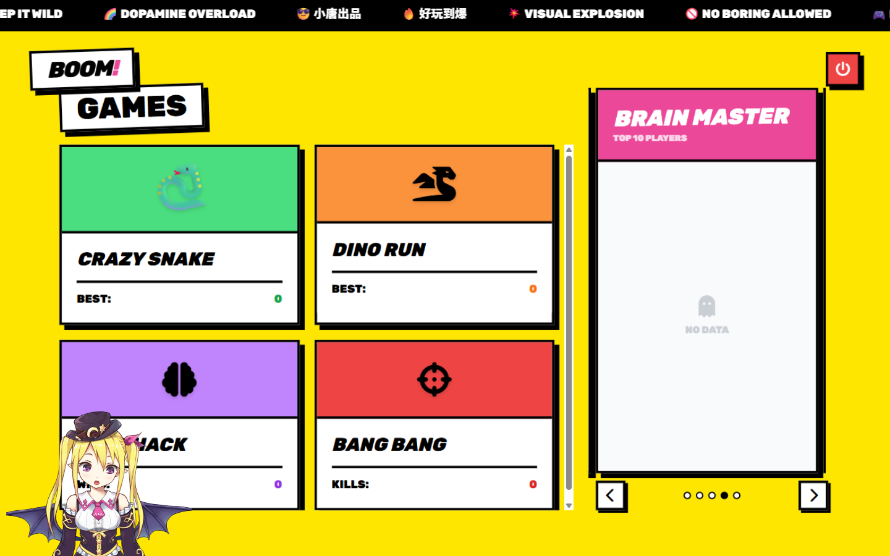
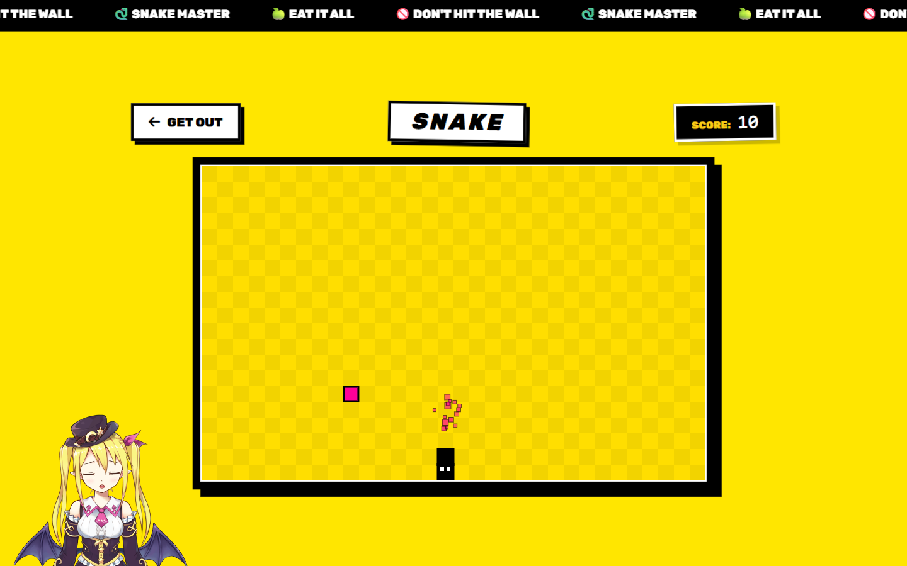
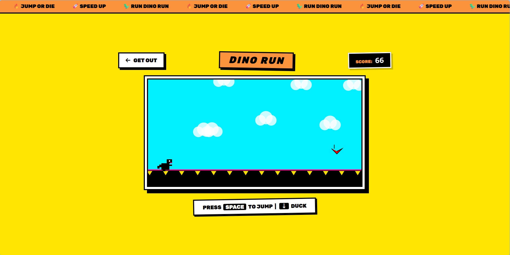
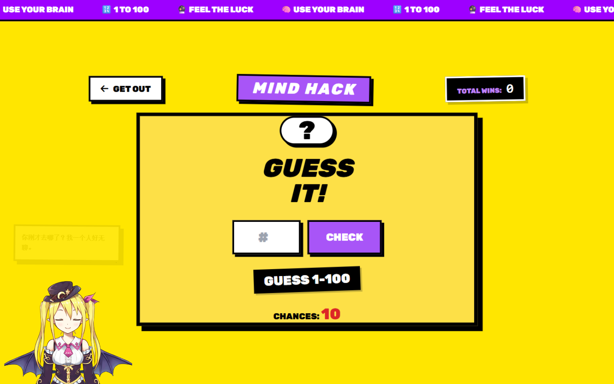
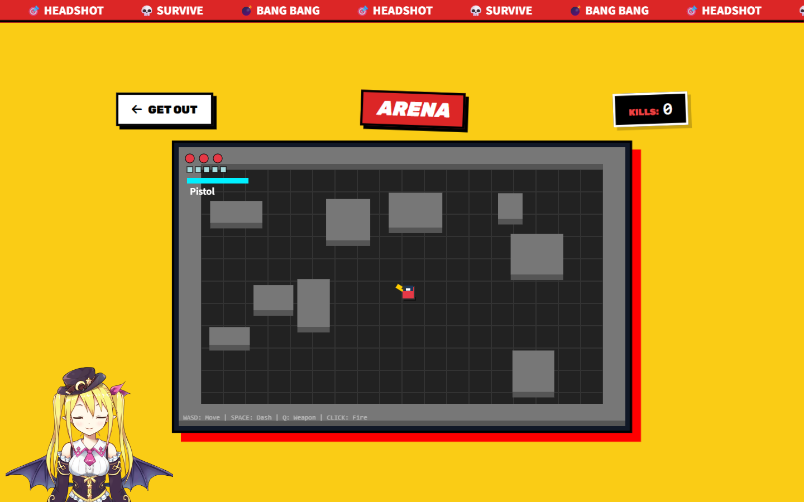

项目 02 · Java 全栈 · Silly Pixel
BoomArcade 街机乐园
4 款小游戏的在线街机：注册登录、最高分排行榜、管理后台。
从数据库到像素，全栈实现，跑在一台树莓派上。
在线试玩 ↗
技术栈：Java · Servlet 6 · JSP · MySQL · AI 辅助开发
项目 02 · Java 全栈 · Silly Pixel
4 款小游戏的在线街机：注册登录、最高分排行榜、管理后台。
从数据库到像素，全栈实现，跑在一台树莓派上。
Overview
一个复古街机风格的在线游戏平台：贪吃蛇、恐龙跳跃、太空射击、猜数字 4 款游戏，共用一套账号、排行榜与管理后台。项目采用 AI 辅助开发（vibe coding）：需求、验收、调试与部署由我负责，实现由 AI 加速。
注册 / 登录 / 昵称 / 会话管理；每个游戏只保留个人最高分（服务端 upsert）；支持封禁与自动解封；管理员后台可管理用户与分数，并基于登录数据生成 7 日活跃趋势。
猜数字的答案只存在服务端 Session 里，看网页源码也拿不到；游戏类型走服务端白名单，防止任意字符串污染数据；所有用户参数都有兜底校验，非法输入不报 500。
数据库连接配置外部化（环境变量 / 用户目录配置文件），同一份 WAR 包在本地和树莓派上各自读取配置直接运行——改环境不用改代码重新打包。
从旧 Servlet 规范升级到 Jakarta EE 6 后，EL 表达式默认开启，把前端 JS 模板字符串里的 ${...} 当成表达式解析，轻则坐标归零重则整页 500。定位后在 web.xml 显式关闭，教训写成了注释。
Interface
Neo-brutalist 街机风：Three.js 三维背景、开机加载动画、跑马灯与贴纸元素——点上方「在线试玩」直接体验。


🕹游戏大厅 · 四款游戏 + 排行榜
🐍游戏页 · 贪吃蛇 / 恐龙 / 射击


Security
代码可以由 AI 执笔，安全决策必须由人拍板——这六条都真实生效在线上，我也能逐条讲清楚它们防的是什么
| 决策 | 解决的问题 |
|---|---|
| HttpOnly + SameSite=Strict Cookie | 防 JS 窃取会话 Cookie，大幅缓解全站 CSRF |
| 全站 PreparedStatement | 用户输入永远走参数占位，杜绝 SQL 注入 |
| 游戏答案只存服务端 Session关键 | 看网页源码也无法作弊，分数由服务端判定 |
| 游戏类型白名单 | 提交任意字符串无法污染排行榜数据 |
| 友好错误页 | 替代 Tomcat 默认错误页，避免泄露类路径与栈帧 |
| 数据库配置外部化 | 源码零明文密码，本地 / 树莓派同一 WAR 包直接跑 |
这些决策的完整理由都写在 web.xml 与源码注释里——我认为安全不是清单，是每一次提交里的习惯。
Why this project
因为它本身就是一份「AI 时代怎么干活」的样本：需求与验收标准我来定， 实现交给 AI 加速，生成的代码我逐个运行、review、踩坑—— 像 Jakarta EE 6 升级后 EL 表达式吞掉 JS 模板字符串这种坑， 只有亲手跑起来、盯日志才会现形。
AI 负责快，我负责对。 把大模型能力落成产品，靠的正是这种人机协作的交付方式—— 对一个想做 LLM 应用 / AI 产品的人来说，这个项目就是工作方式的直接证明。